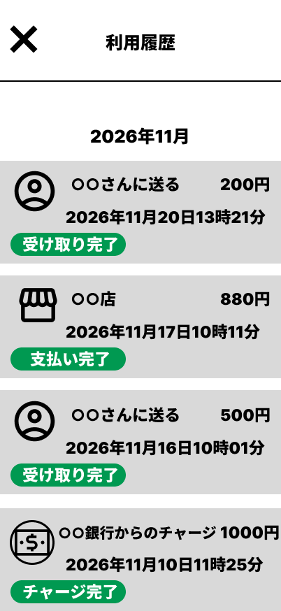
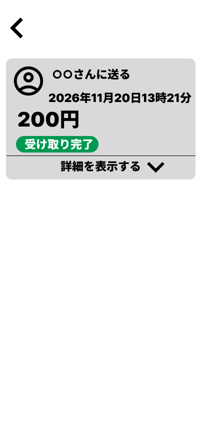
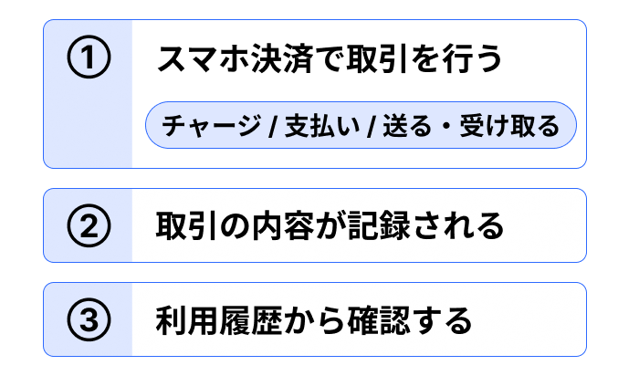

8. 利用履歴を確認する
スマホ決済では、これまでに行った取引の内容を「利用履歴」から確認できます。
利用履歴には、チャージや支払い、他の利用者とのやり取りなど、これまでに行ったさまざまな取引が記録されています。
8.1 利用履歴を見る
この教材の架空アプリでは、ホーム画面から「利用履歴」を選びます。

「利用履歴」を選ぶと、これまでに行った取引が一覧で表示されます。

一覧では、取引の種類や金額、日時などを確認できます。
さらに詳しく確認したい取引がある場合には、一覧の中からその取引を1件選びます。
取引を選ぶと、その取引について詳しい内容が表示されます。

詳細画面では、どのような取引だったのか、いくら利用したのか、いつ行ったのかなどを確認できます。
8.2 行った操作をあとから確認する
利用履歴は、これまでに行った取引を振り返るときに利用できます。
たとえば、残高を増やしたとき、店舗で商品を購入したとき、他の利用者と残高をやり取りしたときなど、行った内容をあとから確認できます。
スマホ決済で行った取引が利用履歴に記録され、あとから確認できるまでの流れは、次のとおりです。

このように、スマホ決済で行った取引はアプリに記録され、必要になったときに利用履歴から確認できます。
一覧から確認したい取引を選ぶことで、その取引についてさらに詳しい内容を見ることもできます。
ポイント
利用履歴では、これまでに行った取引を一覧で確認し、必要に応じて個々の取引の詳しい内容を見ることができます。
以上で教材は終了です。